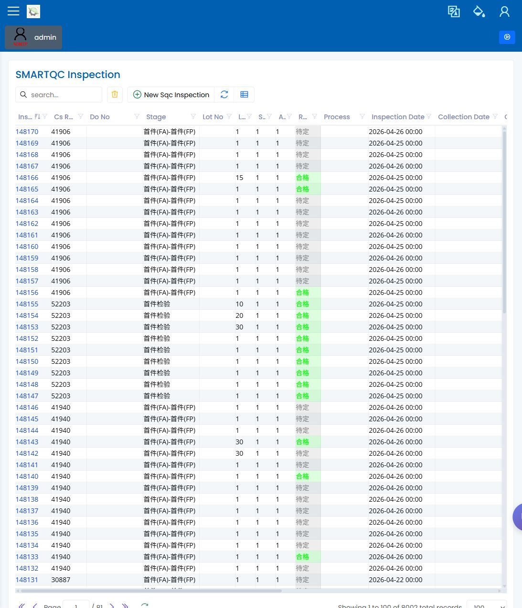
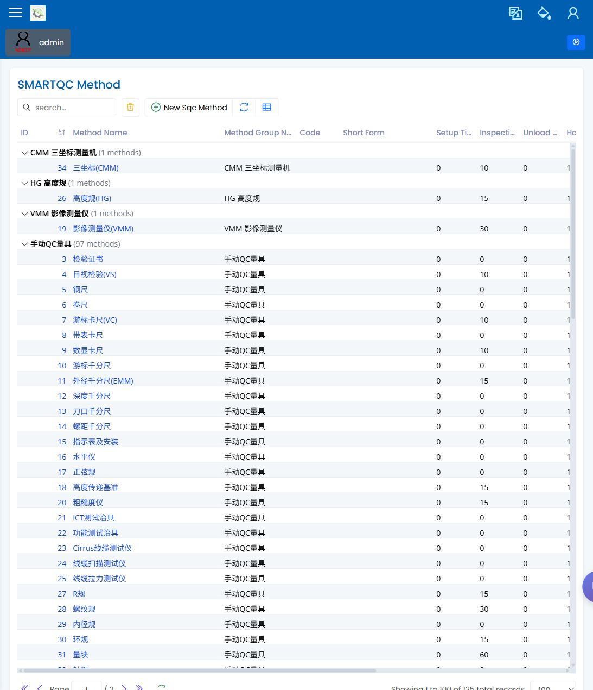

质量工程师手册
English | 中文
内部演示复查质量页面时使用本角色手册。Quality/QC 与 Inspection Planning 仍待上级确认，因此本手册保留这些页面，并加入已截图页面供复查，而不是隐藏该范围。
日常流程
- 确认哪些生产阶段需要检验。
- 在作业到达现场前，确认 SMARTQC 检验表已准备好。
- 复查检验录入结果，并跟进失败或未完成的记录。
- 当缺陷需要正式复查时，建立或复查 NCR。
- 在量具用于检验前，确认校准状态可用。
最常用的屏幕
| 屏幕 | 在这里做什么 | 视觉状态 |
|---|---|---|
| Inspection Planning | 将检验要求关联到生产阶段。 | 已截图 |
| SMARTQC Check Sheets | 复查检验表版本和检验项目。 | 已截图 |
| SMARTQC Inspection Data Entry | 复查或录入检验结果。 | 已截图 |
| SMARTQC Methods and Groups | 维护检验表使用的可见方法名称与方法组。 | 已截图 |
| NCR | 记录和复查不合格详情。 | 已截图 |
| Equipment Calibration | 确认测量设备是否可用于检验。 | 已截图 |
复查时要检查什么
- 本指南中的侧边栏名称与本地应用登录后看到的名称一致。
- 每个屏幕都能打开到预期的列表或表单。
- 用户保存前可以看到必填字段。
- 失败或阻塞以屏幕上可见的状态解释，不写成隐藏系统行为。
常见问题
| 问题 | 可能原因 | 下一步 |
|---|---|---|
| 找不到检验 | 作业可能还没有到达计划的检验阶段，或未选择检验表。 | 复查 Inspection Planning 和相关 SMARTQC 检验表。 |
| 用户能打开页面但不能保存 | 可能有必填字段未填，或角色不允许编辑。 | 先检查屏幕上的必填字段，再请 Administration 复查角色。 |
| 某个测量值无法编辑 | 部分测量行可能由机台或 CMM 采集控制。 | 确认该行是否应允许手工录入。 |
| 校准状态看起来不对 | 校准记录或设备主资料可能未更新。 | 使用设备前复查 Equipment Calibration。 |
截图






Administration 截图仅用于说明当用户能打开页面但无法执行预期动作时，在哪里复查角色访问设置。